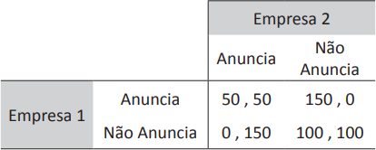

O quadro a seguir mostra dados de duas empresas em um jogo não cooperativo. Os valores apresentados
na matriz de payoffs indicam o ganho monetário (em milhões de R$) de cada empresa em função das
estratégias selecionadas.

FRANK, R. H. Microeconomia e comportamento. Porto Alegre: Bookman, 2013 (adaptado).
Dadas as possibilidades de ganho das duas empresas, é correto afirmar que o jogo apresenta
-
um equilíbrio de Nash perfeito em subjogos, quando a empresa 1 joga primeiro, caracterizado pela
decisão da empresa 1 anunciar, e a empresa 2 não anunciar.
-
dois equilíbrios de Nash, caracterizados pela decisão de ambas anunciarem, ou de ambas não
anunciarem.
-
um equilíbrio em estratégias mistas e nenhum equilíbrio em estratégias dominantes.
-
um equilíbrio de Nash, caracterizado pela decisão das duas empresas de não anunciarem.
-
um equilíbrio em estratégias dominantes, caracterizado pela decisão das duas empresas de anunciarem.